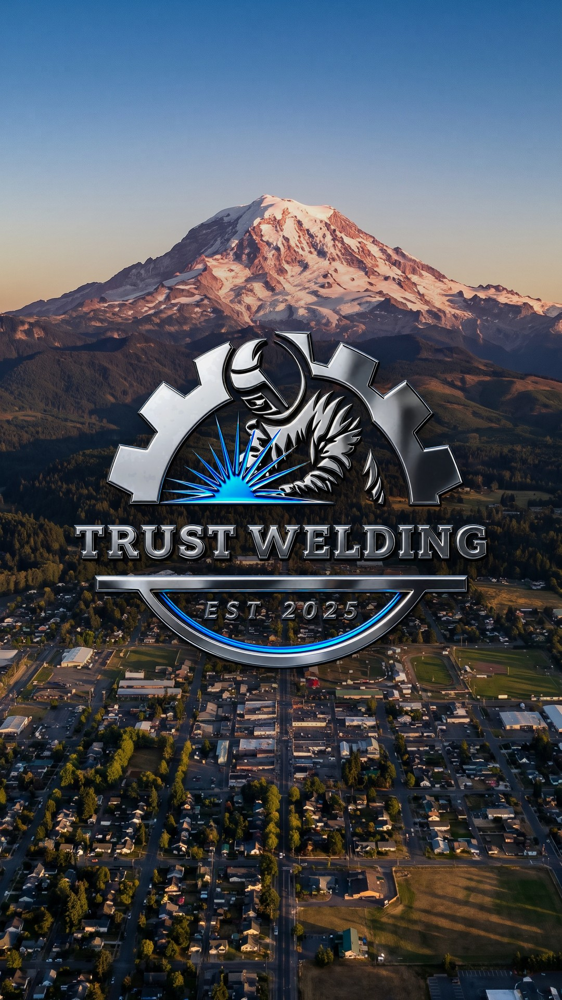
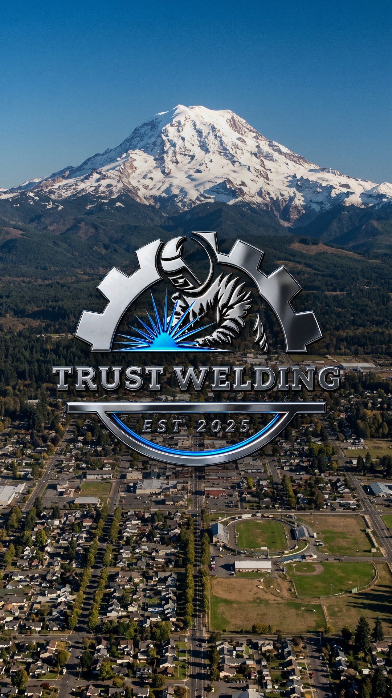
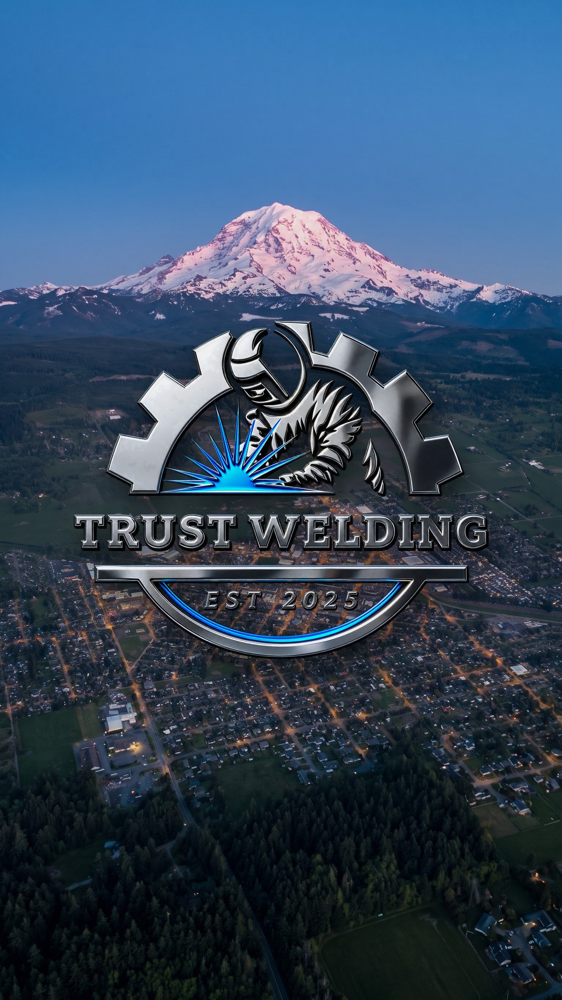
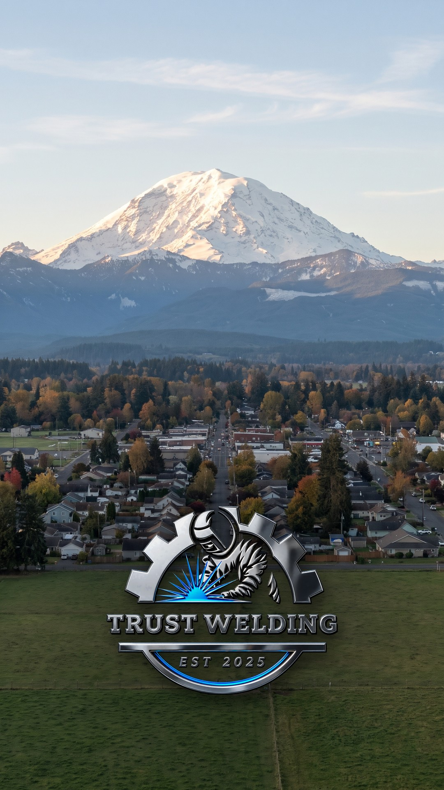

1Your screenshot's angle, last light, emblem centeredThe whole town below, Rainier dead center, the sun raking across the rooftops. My pick.
Four I'd ship, best first. Reply with a number (or "none"). All four town backdrops are generated concepts, not photos of Enumclaw; the emblem is your exact chrome badge, minus the backplate.







Everything else (the bench-and-bay-door take, the emblem-low versions of 1 and 2, the real Commons photo graded) is on the full gallery.